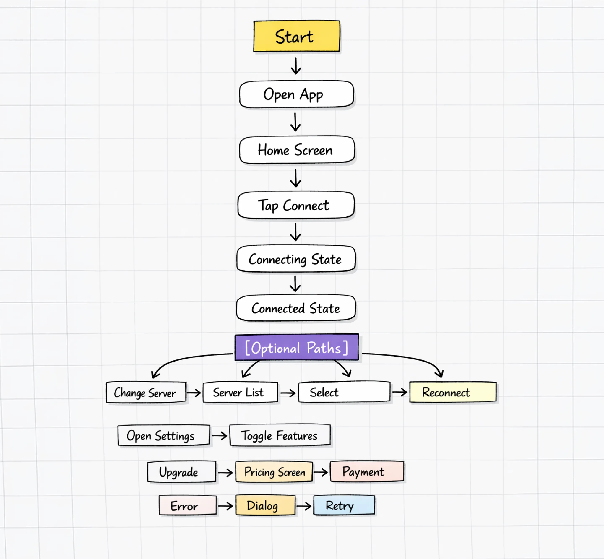
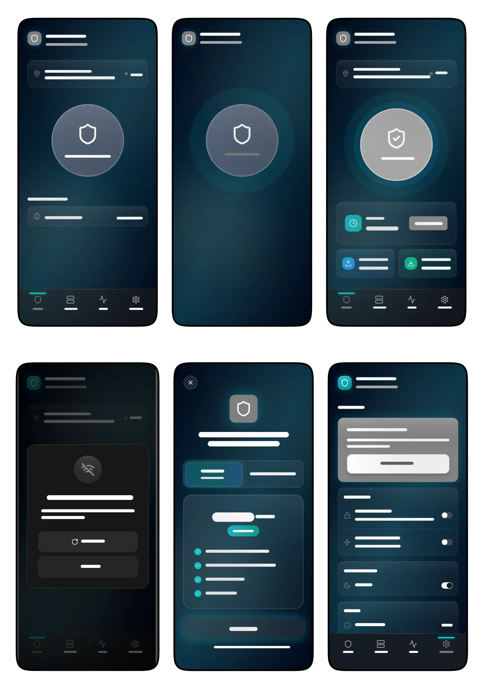
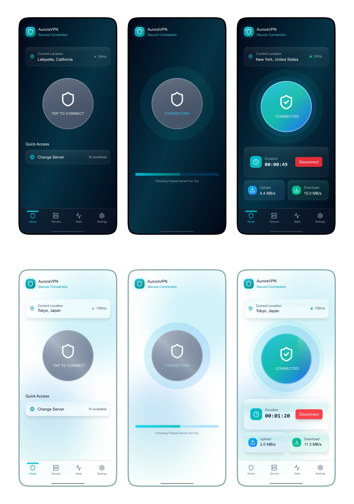
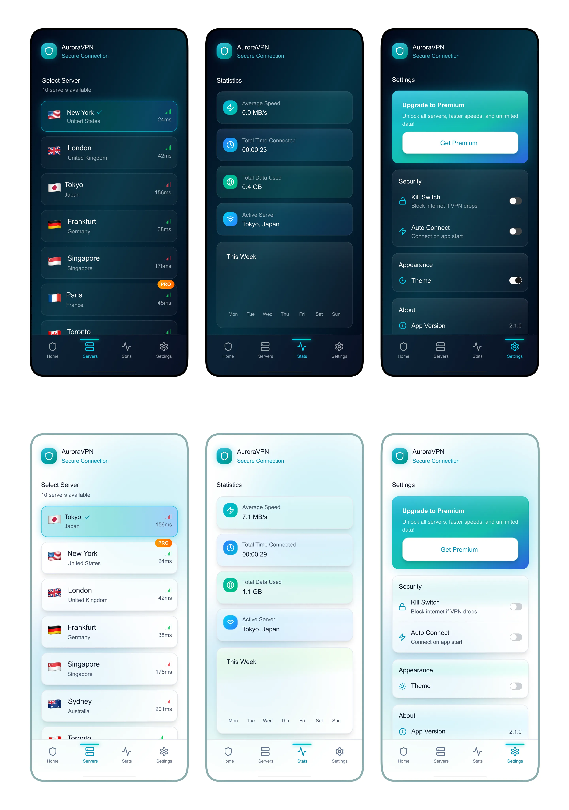
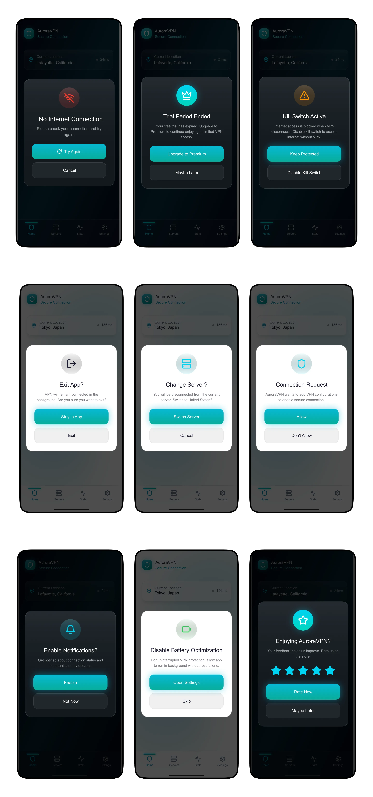

AuroraVPN
Simple, secure, one-tap VPN experience
-
Role:
-
UX/UI Design
-
Category:
-
Mobile App
-
Timeline:
-
2 weeks
-
Tools Used:
-
Figma
Role: UX/UI Design, Interaction Design, Product Thinking
Category: Mobile App Case Study
Timeline: Concept Project
Tools Used: Figma, Illustrator
Overview
AuroraVPN is a mobile app designed to make secure internet access simple, fast, and intuitive. The focus was to reduce complexity and create a seamless one-tap VPN experience.
Problem
Most VPN apps:
- Feel overly technical
- Lack clear connection feedback
- Have confusing upgrade flows
Solution
A minimal, user-friendly VPN with:
- One-tap connection
- Clear visual states (Disconnected → Connecting → Connected)
- Simple server selection
- Clean and transparent premium upgrade flow
User Flow
This flow represents the user journey from app launch to successful connection, including optional actions like server selection, settings, upgrades, and error recovery.

Wireframes
Low-fidelity layouts focused on:
- Clear hierarchy
- Central CTA (Connect button)
- Simple navigation

Final Design
The final product focuses on clarity, speed, and confidence. Each state of the app was designed to make the connection process obvious while keeping settings, premium access, and recovery states easy to navigate.
Connection Experience

Server Selection, Stats & Setting

Dialog States

Design System
- Style: Minimal, modern
- Colors: Teal/blue gradient + dark mode
- UI: Rounded cards, soft shadows
- Typography: Clean & readable
Key Decisions
- One-tap connection for ease of use
- Clear visual states for feedback
- Transparent upgrade flow to build trust
Outcome
- Simplified VPN interaction
- Improved usability and clarity
- Better upgrade experience
Learnings
- Feedback is critical in system-based apps
- Simplicity increases trust
- Micro-interactions improve perception


© 2026 Zoya Abbasi. Built with ♥